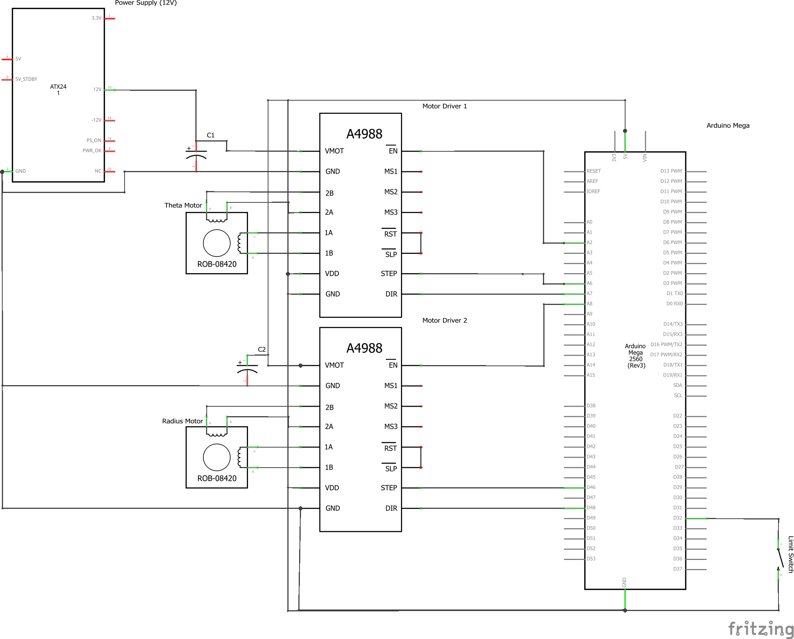

The electrical system consists of three components: the hardware, the stepper controller script, and the serial port communication from python to Arduino. The electrical hardware includes the following
- Arduino Mega2560
- RAMPS 1.4 Controller
- 2 A4988 stepper motor drivers
- 2 Nema 17 Bipolar stepper motors
- 1 Gikfun V-153-1C25 micro limit switch
A circuit diagram showing how the electronics connect to the Arduino is below.
The circuit diagram above details how the stepper motors are connected to the Arduino Mega. The bipolar stepper motors are connected to the A4988 stepper motor drivers via 1A, 1B, 2A, 2B pins. Each driver is connected to the Arduino Mega via the ground, power, enable, stepper, and direction pins. We use a RAMPS 1.4 Controller which we place on top of the Mega. The Controller allows us to connect the stepper drivers to our 12V power supply. The capacitor, VMOT, and GND pins are integrated with the Controller.
The limit switch is connected to digital pin 32 and ground on the Arduino Mega.
The Stepper_Control.ino script acts as a bridge between the hardware and software. Here is its general code workflow:
- setup()
- Initialize the pins associated with the stepper motors and the limit switch
- Complete radius axis calibration with moveToHomeInMillimeters (reference sprint 3 post for more information)
- loop()
- Wait for a peg list message from python
- Break up the peg list string into two arrays, one with the sequence of peg numbers and one with the move_types (0 or 1)
- Iterate through the arrays and call move_to_peg() for each peg number and move type
- Print “Tasks Completed!” message to serial
- Repeat steps 2a to 2d if python sends another peg list (applicable if peg list contains more than 20 pegs)
Each stepper motor is associated with three pins, the enable pin, the motor step pin, and the motor direction pin. The following code snippet shows how to initialize the theta axis motor, stepper_t (a very similar process is completed to initialize the radius motor):
SpeedyStepper stepper_t;
pinMode(STEPPER_ENABLE_PIN_T, OUTPUT);
digitalWrite(STEPPER_ENABLE_PIN_T,LOW);
stepper_t.connectToPins(MOTOR_STEP_PIN_T, MOTOR_DIRECTION_PIN_T);
The first line involves declaring a SpeedyStepper object, which allows us to use the SpeedyStepper functions. The second and third lines set the enable pin as an output with an initial state of LOW. The enable pin allows for manual control but is not required to run the stepper motors, which is why we keep it set to LOW. The fourth line involves actually initializing stepper_t with the relevant step and motor direction pins. The step pin is used to control the steps of the motor, while the direction pin controls the rotation direction. After initialization, we can then set the speeds of the motors and start executing our motor commands. Our theta motor moves in units of revolutions, while our radius motor moves in units of mm.
move_to_peg() converts the next and current peg numbers into degrees, resulting in next_peg_loc and curr_peg_loc. It then calculates and finds the minimum (min_diff1) of the following differences
diff1 = next_peg_loc - curr_peg_loc
diff2 = (360 - abs(diff1))*sign(diff1)
If the move_type is 0, then the theta motor is moved by min_diff1. If the move_type is 1, then we need to decide whether to cross the pegboard or not. To do this, we find curr_peg_loc_across which is the location of the current peg subtracted by 180 degrees. The minimum (min_diff2) of the following differences is found
diff3 = next_peg_loc - curr_peg_loc_across
diff4 = (360 - abs(diff3))*sign(diff3)
If min_diff1 is greater than 90 degrees, then we cross the pegboard (theta motor is moved by min_diff2, and radius motor is moved by the diameter of pegboard). Else, we don’t cross the pegboard (theta motor is moved by min_diff1, and radius motor is moved by nothing). move_to_peg() ends by calling wrapAround().
The input to wrapAround() is the direction. If the direction is 1, then the dispenser is on the same side as the limit switch. A direction of -1 indicates that the dispenser is on the opposite side. Before moving the motors, the speeds are increased. The wrapping process can be broken down into five steps
- Move the dispenser to the edge of pegboard
- Move the dispenser clockwise by one peg
- Move the dispenser back inside the pegboard
- Move the dispenser counterclockwise by one peg
- Move the dispenser back to the edge of the pegboard
In order to integrate the peg list generation software with the Arduino stepper control script, we wrote a simple serial communication script in python that takes a peg list, breaks it up into sublists with 20 pegs each, converts the sublist of tuples into a string with peg numbers and move types combined together, sends the message through the serial to the Arduino, and waits for a reply before sending the next sublist. Serial communication utilizes the python serial library.
On the Arduino side, the loop function constantly checks for a message in the serial and, if it finds one, extracts the peg number and move_type information from the input string. From there the motor commands are computed and executed as described above. Once the entire peg list is sent, python sends a “Finished” message. Upon receiving the “Finished” message, Arduino waits for a few seconds before calling the unwind function.